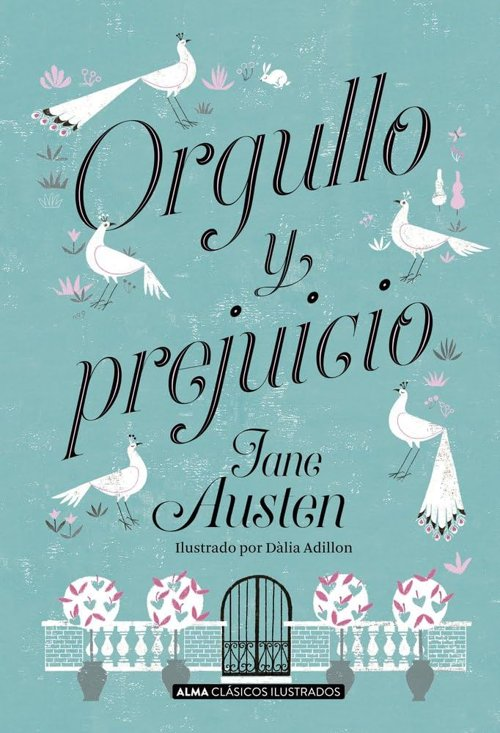

EL ESTANTE COMÚN
¿Buscas tu próxima lectura?
Un espacio hecho por dos lectoras y amigas universitarias que comparten sus recomendaciones donde exploramos mundos de fantasía, ciencia ficción, romance y terror.
Todo empezó como intercambio de libros entre materias, apuntes y charlas interminables. Hoy reunimos aquí nuestras lecturas favoritas: las que nos hicieron suspirar, desvelarnos o quedarnos pensando para ayudarte a encontrar tu próxima historia
 TERROR |
 ROMANCE |
 FANTASÍA |
 CIENCIA FICCIÓN |
Recomendación del mes
Te recomendamos Popurrí porque es una obra que desafía lo que debe ser un poema al utilizar material de la cultura pop y un tono humorístico en su juego. Esta es una lectura libre de prejuicios donde conceptos filosóficos, personajes históricos y chistes de la actualidad conviven en la misma página.
Calificación: 10/10